| Unobserved truth | |||
|---|---|---|---|
| Negatives | Positives | ||
| Predicted | Negatives | True Negative | False Negative |
| Positives | False Positive | True Positive | |
Advanced Regression 4b: Machine learning, classification
Garyfallos Konstantinoudis
Imperial College London
Aug 3, 2025
Classification analysis:
- Basic concepts
- Evaluation
Discriminant analysis:
- Bayes’ theorem for classification
- Model specifications
- Linear and quadratic discriminant analysis in
R - Shrinkage estimates
- Shrinkage discriminant analysis in
R
Support vector machines:
- Motivation
- Hyperplanes
- Maximal margin classifier
- Support vector classifier
- Support vector machines
- Support vector machines in
R
Classification of binary outcomes
- Assume we have a binary outcome \(y_i\) for subject \(i\).
\[ y_i = \begin{cases} 1 \text{ if subject } i \text{ is a case} \\ 0 \text{ if subject } i \text{ is a control} \\ \end{cases} \]
- Additionally, we have for each subject a predictor matrix \(x_i\) including \(p\) predictors or features.
\(K=2\) Classification of two classes.
Aim is to predict the outcome of a new observation \(i\) based on \(x_i\) and to assign observation \(i\) to either class \(k=0\) or \(k=1\).
Decisions are based on the probability to belong to class \(k\) conditional on \(x_i\).
\[ \mathbb{P}(y_i=k \mid x_i) \]
Evaluation of classification performance: Confusion matrix
The sum of the columns are the number of negatives and the number of positives in the data.
Characteristics derived from the confusion matrix
Sensitivity, recall, or true positive rate (TPR) \[ TPR = \frac{TP}{P} = \frac{TP}{TP+FN} \]
Specificity, or true negative rate (TNR): \[ TNR = \frac{TN}{N} = \frac{TN}{TN+FP} = 1-FPR \]
False positive rate (FPR): \[ FPR = \frac{FP}{N} = \frac{FP}{TN+FP} = 1-TNR \]
Precision, or positive predictive value (PPV): \[ PPV = \frac{TP}{\text{Declared } P} = \frac{TP}{TP+FP} = 1-FDR \]
Interpretation
- Sensitivity, or true positive rate (TPR): The probability that the test result picks up the disease.
- Specificity, or true negative rate (TNR): The probability that the test result identifies the ones that do not have the disease.
- False positive rate (FPR): the expectancy of the false positive ratio, i.e. how likely is to have a negative test given that the patient has the disease.
- Precision, or positive predictive value (PPV): how likely it is for someone to truly have the disease, in case of a positive test result.
Receiver operating characteristic (ROC)
- Plot sensitivity (TPR) on the \(y\)-axis against 1-specificity (FPR) on the \(x\)-axis.
- Area under the ROC curve as summary-statistic for prediction performance.
- Tweetorial on AUC.
# A tibble: 1 × 3
.metric .estimator .estimate
<chr> <chr> <dbl>
1 roc_auc binary 0.939Precision-recall curve
- Plot precision or positive predictive value (PPV) on the \(y\)-axis against the recall or true positive rate (TPR) on the \(x\)-axis.
# A tibble: 1 × 3
.metric .estimator .estimate
<chr> <chr> <dbl>
1 pr_auc binary 0.946ROC and precision-recall curve in R
pROC::roc(truth, predicted)yardstick::roc_auc(truth, predicted)
Motivation for discriminant analysis
- DA partitions \(X = R^d\) into regions with the same class predictions via separating hyperplanes.
- Fit a Gaussian distribution for each class
- Find the line where the probability of being in both classes is the same.
Motivation for discriminant analysis
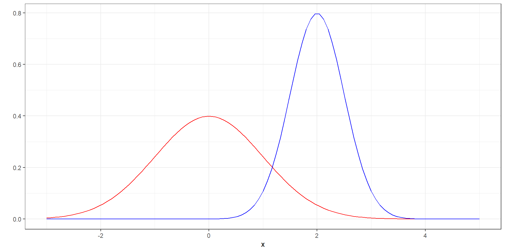Example of classification rule: Assign the new value \(x\) to the class with the greatest likelihood
\[ \hat{y} = \text{argmax}L(\mu_i, \sigma_i|x) \]
Motivation for discriminant analysis
DA partitions \(X=R^d\) into regions with the same class predictions via separating hyperplanes.
Fit a Gaussian distribution for each class
Find the line where the probability if being in both classes is the same
Motivation for discriminant analysis
Derive the posterior probability for subject \(i\) to belong to class \(k\) based on
Likelihood of the data for \(p=1\) predictor (univariate Gaussian distribution) conditional on class \(k\) \[ f (x\mid k) = \frac{1}{\sqrt{2\pi} \sigma_k} \exp\left\{ -\frac{1}{2} (\frac{x- \mu_k}{\sigma_k})^2 \right\} \] where
- \(\mu_k\) is the expectation of \(x\) in group \(k\) and
- \(\sigma_k^2\) the variance of \(x\) in group \(k\).
- Note that each class \(k=0\) or \(k=1\) has its specific mean \(\mu_k\) and variance \(\sigma_k^2\).
Prior probability of belonging to class \(k\) is \(\pi_k\)
Motivation for discriminant analysis
Derive the posterior probability for subject \(i\) to belong to class \(k\) based on:
Likelihood of the data for \(p\) predictors (multivariate Gaussian distribution) conditional on class \(k\) \[ f (x\mid k) = \frac{1}{ (2\pi)^{p/2} \mid \Sigma_k \mid^{1/2}} \exp \left\{ -\frac{1}{2} (x- \mu_k)^t \Sigma^{-1}_k (x - \mu_k) \right\} \] where
- \(\mu_k\) is the vector of expectations (length \(p\)) of \(x\) in group \(k\) and
- \(\Sigma_k\) the covariance matrix (dimension \(p \times p\)) of \(x\) in group \(k\).
- Note that each class \(k=0\) or \(k=1\) has its specific mean \(\mu_k\) and covariance \(\Sigma_k\).
Prior probability of belonging to class \(k\) is \(\pi_k\)
Note on the multivariate Gaussian distribution
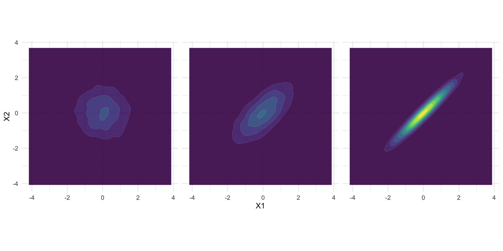Different multivariate normals with the same mean but increasing cross-correlation.
Bayes’ theorem for classification
Probability of being in a class or more formally: posterior probability that \(y=k\), where \(k=1\) or \(k=0\), given the data \(x\) \[ \mathbb{P}(y=k \mid x) = \frac{\pi_k f(x\mid k)}{f(x)} \] where
- \(\pi_k\) prior probability for class \(k\)
- \(f(x\mid k)\) likelihood of \(x\) conditional on class \(k\)
- \(f(x)\) joint distribution defined as mixture
\[ f(x) = \pi_0 f_0(x) + \pi_1 f_1(x) \]
Prediction rule
The prediction rule is given by the difference between the two discriminant scores \(d_0\) and \(d_1\) \[ \begin{eqnarray} \delta(x_i) & = & \log(\mathbb{P}(y=0 \mid x_i)) - \log(\mathbb{P}(y=1 \mid x_i)) \\ & = & d_0(x) - d_1(x) \end{eqnarray} \] where observation \(i\) is classified as
- \(y_i = 1\) if \(\delta(x_i)\leq 0\)
- \(y_i = 0\) if \(\delta(x_i) > 0\)
Model specifications and flexibility
There are three types of discriminant analysis depending on the specification of the covariance \(\Sigma_k\):
- Diagonal discriminant analysis (dda): \(\Sigma_k = diag(\sigma^2)\), assuming no covariance between predictors.
- Parameters to estimate: \(p\) diagonal elements
- Linear discriminant analysis (lda): \(\Sigma_k = \Sigma\), assuming covariance between predictors, but it is the same for both groups \(k=0\) and \(k=1\).
- Parameters to estimate: full covariance matrix (\(p(p+1)/2\) parameters)
- Quadratic discriminant analysis (qda): \(\Sigma_k = \Sigma_k\), assuming covariance between predictors, which may differ between group \(k=0\) and \(k=1\).
- Parameters to estimate: twice full covariance matrix (\(2 \times p(p+1)/2\) parameters)
Diagonal discriminant analysis
- dda: \(\Sigma_k = diag(\sigma^2)\), assuming no covariance between predictors.
- dda is also known as naive Bayes classifier.
- The discriminant function \(d_k\) for dda simplifies (after dropping terms which are identical for \(d_0\) and \(d_1\)) to:
\[ d_k(x) = \mu_k^t diag(\sigma^2)^{-1} x - \frac{1}{2} \mu_k^t diag(\sigma^2)^{-1} \mu_k + log(\pi_k) \]
Advantages of dda:
- Easy to fit.
- Strong assumptions (no correlation between predictors and the same covariance matrix in both groups).
Linear discriminant analysis
- lda: \(\Sigma_k = \Sigma\), allowing for covariance between predictors.
- The discriminant function \(d_k\) for lda simplifies (after dropping terms which are identical for \(d_0\) and \(d_1\)) to:
\[ d_k(x) = \mu_k^t \Sigma^{-1} x - \frac{1}{2} \mu_k^t \Sigma^{-1} \mu_k + log(\pi_k) \]
Advantages of lda:
- Allowing for correlation between predictors.
- Issues for big data (\(n<p\)) to invert \(\Sigma\).
- Assuming the same covariance matrix \(\Sigma\) for group \(k=0\) and \(k=1\).
LDA example
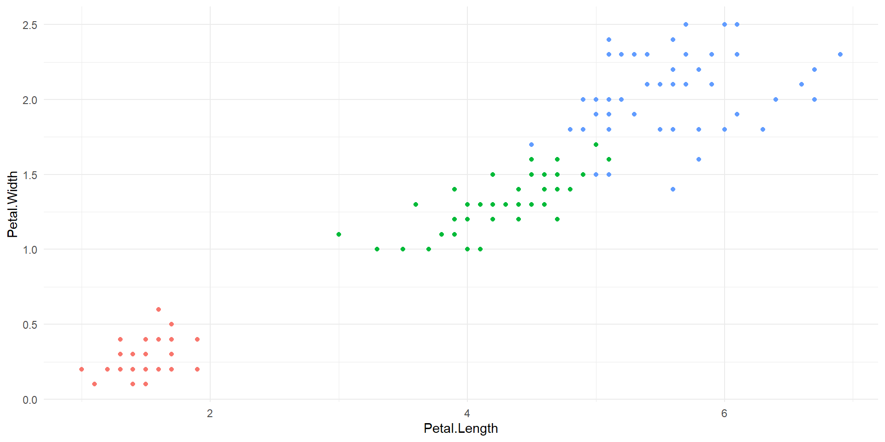LDA example
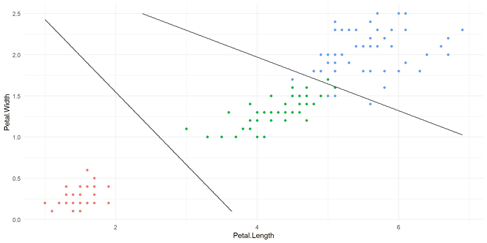Quadratic discriminant analysis
- qda: \(\Sigma_k\), allowing for different covariances between groups.
- The discriminant function \(d_k\) for qda simplifies (after dropping terms which are identical for \(d_0\) and \(d_1\)) to:
\[ d_k(x) = \mu_k^t \Sigma^{-1}_k x - \frac{1}{2} \mu_k^t \Sigma^{-1}_k \mu_k + log(\pi_k) \]
Advantages of qda:
- Allowing for correlation between predictors.
- Issues for big data (\(n<p\)) to invert \(\Sigma\).
- qda allows for the most flexibility at the cost of many additional parameters.
QDA example
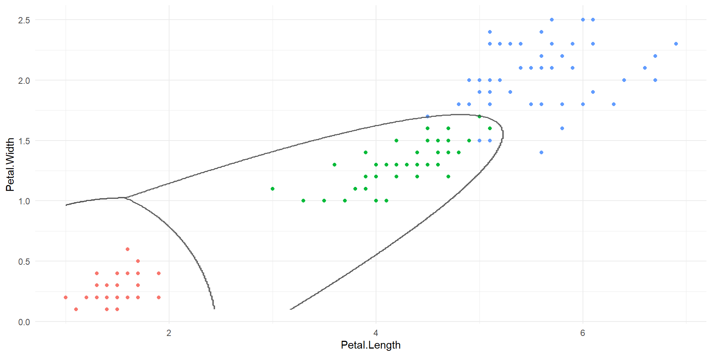MASS::lda(): Iris
Call:
lda(Species ~ ., data = iris)
Prior probabilities of groups:
setosa versicolor virginica
0.3333333 0.3333333 0.3333333
Group means:
Sepal.Length Sepal.Width Petal.Length Petal.Width
setosa 5.006 3.428 1.462 0.246
versicolor 5.936 2.770 4.260 1.326
virginica 6.588 2.974 5.552 2.026
Coefficients of linear discriminants:
LD1 LD2
Sepal.Length 0.8293776 -0.02410215
Sepal.Width 1.5344731 -2.16452123
Petal.Length -2.2012117 0.93192121
Petal.Width -2.8104603 -2.83918785
Proportion of trace:
LD1 LD2
0.9912 0.0088 Equivalently use qda(Species ~ ., data = iris)
MASS::lda(): Iris
Shrinkage estimate
- Standard implementations of discriminant analysis use the sample covariance to estimate \(\Sigma\).
- The computation of the discriminant function for lda and qda requires the inversion of \(\Sigma\), a \(p \times p\) matrix.
- In high-dimensional settings where \(n<p\), \(\Sigma\) cannot be inverted.
- Shrinkage estimates for \(\Sigma\) ensure lda and qda can be computed for high-dimensional data.
- Implementation
sdapackage inR.
Application: Imaging data to predict breast cancer diagnosis
Outcome: Diagnosis (M=malignant, B=benign)
\(n-569\) Breast cancer patients
\(p=30\) Predictors
Derived from digitized images to define characteristics of the cell nuclei present in the image
Ten real-valued features summarised in mean, se and worst (mean of the three largest values)
Dataset from the UCI Machine Learning Repository
y
B M
357 212 sda package in R
- dda:
sda(x, y, diagonal=TRUE)
Number of variables: 31
Number of observations: 569
Number of classes: 2
Estimating optimal shrinkage intensity lambda.freq (frequencies): 0.0254
Estimating variances (pooled across classes)
Estimating optimal shrinkage intensity lambda.var (variance vector): 0.0771 confusionMatrixfrom thecrossvalpackage
sda package in R
- lda:
sda(x, y, diagonal=FALSE)
Number of variables: 31
Number of observations: 569
Number of classes: 2
Estimating optimal shrinkage intensity lambda.freq (frequencies): 0.0254
Estimating variances (pooled across classes)
Estimating optimal shrinkage intensity lambda.var (variance vector): 0.0771
Computing inverse correlation matrix (pooled across classes)
Estimating optimal shrinkage intensity lambda (correlation matrix): 0.0333 confusionMatrixfrom thecrossvalpackage
ROC curve
- Define foreground (
fg) and background (bg):
- Compute the ROC curve:
Precision-recall curve
- Define foreground (
fg) and background (bg):
- Compute the ROC curve:
An introduction to support vector machines
Evolution of support vector machines:
- Hyperplanes to introduce simple decision boundaries.
- Maximal margin classifier as the best hyperplane.
- Support vector classifier allowing for soft margins.
- Support vector machine using kernels for non-linear decision boundaries.
What is a hyperplane?
In a \(p\)-dimensional space, a hyperplane is a flat affine subspace of dimension \(p − 1\):
- In two dimensions, a hyperplane is a line.
- In three dimensions, a hyperplane is a plane.
For example in two dimensions, a hyperplane is defined by
\[ \beta_0 + \beta_1 x_1 + \beta_2 x_2= 0 \] A hyperplane separates observations \(x=(x_1, x_2)\) into two groups \[ \beta_0 + \beta_1 x_1 + \beta_2 x_2 \begin{cases} > 0 \\ < 0 \end{cases} \]
What is a hyperplane?
\[ 1 + 2 x_1 + 3 x_2 \begin{cases} > 0 \quad \text{blue} \\ < 0 \quad \text{red} \end{cases} \]
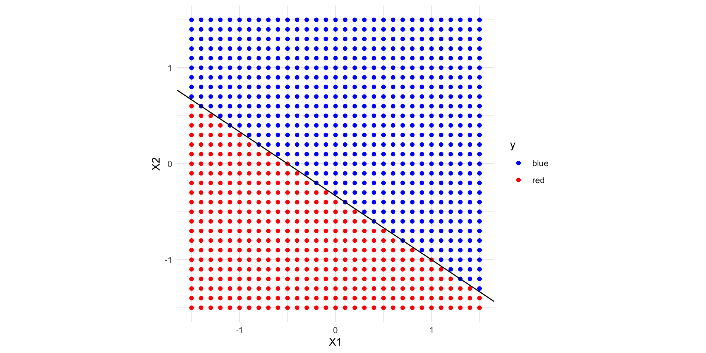What is a hyperplane?
If two classes are perfectly separable, there is not a unique solution for a hyperplane.
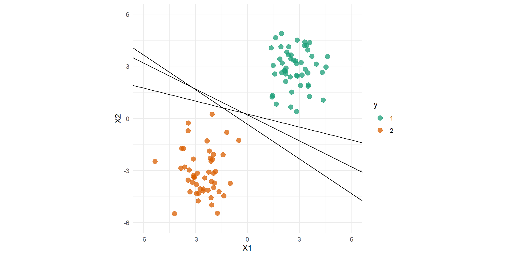Maximal Margin classifier
- Maximal margin classifier provide unique analytical solutions.
- This is the optimal separating hyperplane that has the highest minimum distance (margin) to the training data.
Setting default kernel parameters - Note: The maximal margin classifier only depends on the three observations closest to the decision boundary, not to the other observations.
Maximal Margin classifier
We need to define:
- Separating hyperplane \(\beta_0 + \beta_1X1 + \beta_2X_2\)
- Margin (distance to the closest data points from hyperplane)
- Support vectors (points with distance equal to the margin from hyperplane)
Optimisation: Maximal margin classifier
\[ \max_{\beta_0, \beta_1, ..., \beta_p} M \quad \text{subject to} \sum_{j=1}^p \beta_j^2 =1 \text{ forces unique solution}\\ y_i (\beta_0 + \beta_1 x_{i1} + ... + \beta_p x_{ip} ) \geq M \quad \forall i \in 1,...,n \]
- \(\beta_0, \beta_1, ..., \beta_p\) parameters to be fitted
- \(i \in 1,...,n\) observations
- \(M\) is the margin, distance of observation to decision boundary
- Outcome: \[ y_i = \begin{cases} 1 & \text{ if $i$ in group 1} \\ -1 & \text{ if $i$ in group 0} \end{cases} \]
Maximal margin classifier
- Good for separating non-Gaussian data
- Is not possible if there is no linear separation
Support vector classifier
- Support vectors: Observations which support the maximal margin hyperplane.
- In most application examples, there is no separating hyperplane that can separate two groups.
Aim: Support vector or soft margin classifier:
- Develop a hyperplane that almost separates the classes.
- Better classification of majority of observations.
- Greater robustness to individual variation.
- Avoid overfitting to the training data.
Distinction: margin and hyperplane
- Hyperplane: Decision boundary (solid line)
- Margin: Optimised in maximal margin classifier (dashed line)
:::
Optimisation: support vector classifier
\[ \max_{\beta_0, \beta_1, ..., \beta_p} M \quad \text{subject to} \sum_{j=1}^p \beta_j^2 =1 \\ y_i (\beta_0 + \beta_1 x_{i1} + ... + \beta_p x_{ip} ) \geq M (1-\epsilon_i) \quad \forall i \in 1,...,n \\ \text{ where } \epsilon_i \geq 0 \text{ and } \sum_{i=1}^n \epsilon_i \leq C \]
- Slack variables allow for a few observations to be on the wrong side of the margin or the hyperplane (missclassification)
- \(C\): Budget for the amount that the margin can be violated.
Difference from maximal marginal classifier: Regularisation in form of a tuning parameter \(C\) and slack variables introduces bias but provides better generalisation.
Support vector classifier
Effect of varying \(C\).
Setting default kernel parameters
maximum number of iterations reached 0.002679655 0.002679193 Setting default kernel parameters Support vector machines
Support vector classifier assumes linear decision boundaries.
How can we allow for more flexibility and non-linear decision boundaries?
- Include quadratic, cubic, or higher-order polynomial functions of the predictors.
- Add the squared \(x_1^2, ... , x_p^2\) or cubic predictors \(x_1^3, ... , x_p^3\).
- Use kernel functions
- The optimization algorithm of the support vector classifier is based on the dot product between two observations. \[ \langle x_i,x_{i'} \rangle = \sum_{j=1}^{p} x_{ij} x_{i'j} \]
Kernel functions
The dot product is also known as linear kernel
\[ K(x_i,x_{i'}) = \sum_{j=1}^{p} x_{ij} x_{i'j}. \]
Polynomial kernel: \[ K(x_i,x_{i'}) = (1 + \sum_{j=1}^{p} x_{ij} x_{i'j})^d \]
Radial basis: \[ K(x_i,x_{i'}) = exp( -\gamma \sum_{j=1}^{p} (x_{ij}- x_{i'j})^2) \]
Sigmoid kernel: \[ K(x_i,x_{i'}) = \gamma \sum_{j=1}^{p} x_{ij} x_{i'j} + r \]
Polynomial kernel of degree 2 example
Idea: Convert to higher dimension and separate using a hyperplane
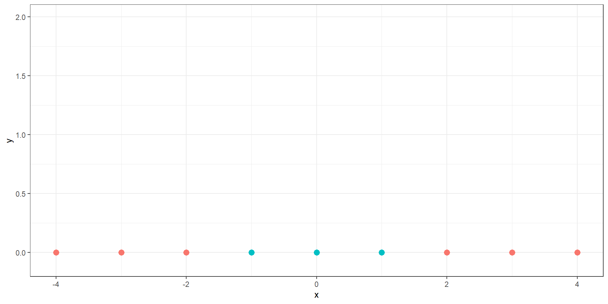Polynomial kernel of degree 2 example
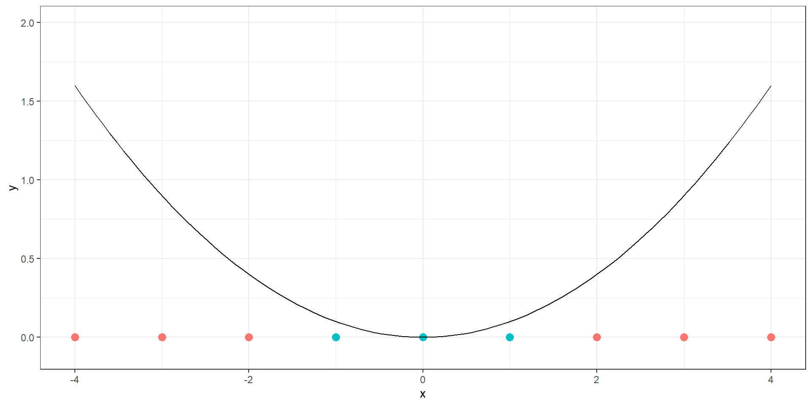Polynomial kernel of degree 2 example
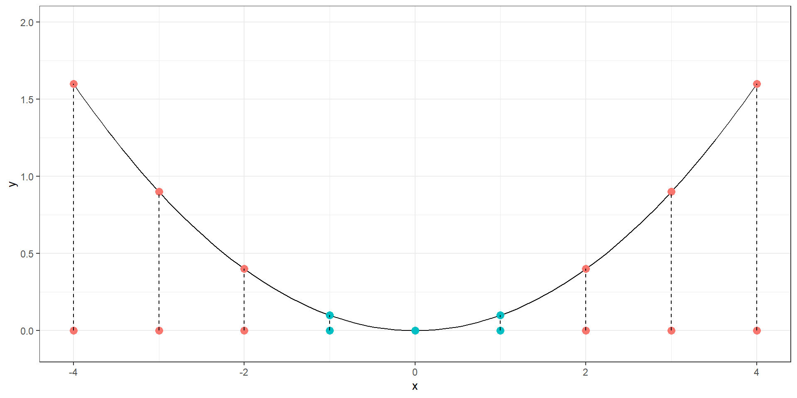Polynomial kernel of degree 2 example
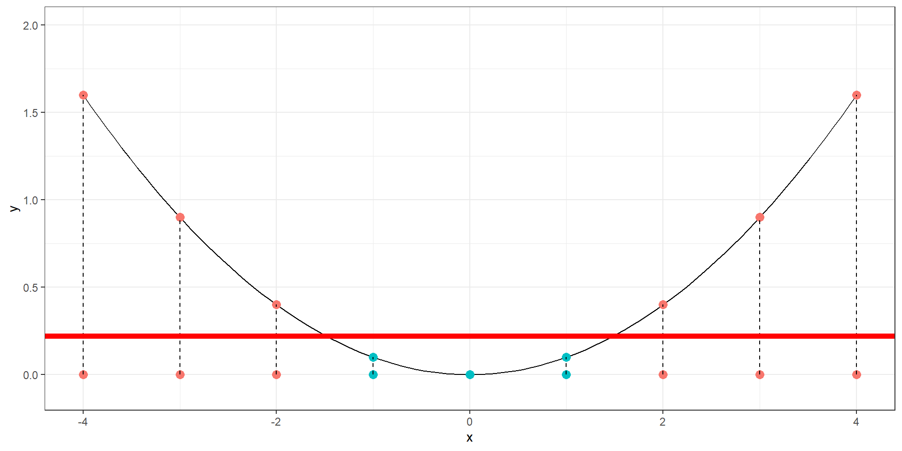Kernel functions

e1071::svm()
Confusion matrix in caret package
Confusion Matrix and Statistics
Reference
Prediction A B
A 10 0
B 3 7
Accuracy : 0.85
95% CI : (0.6211, 0.9679)
No Information Rate : 0.65
P-Value [Acc > NIR] : 0.04438
Kappa : 0.7
Mcnemar's Test P-Value : 0.24821
Sensitivity : 0.7692
Specificity : 1.0000
Pos Pred Value : 1.0000
Neg Pred Value : 0.7000
Prevalence : 0.6500
Detection Rate : 0.5000
Detection Prevalence : 0.5000
Balanced Accuracy : 0.8846
'Positive' Class : A
Take away: Machine learning: Classification
- Evaluation of classification performance based on parameters derived from the confusion matrix.
- Visualisation using ROC and precision-recall curves.
- Discriminant analysis is a parametric approach for classification.
- Diagonal, linear and quadratic discriminant analysis are based on different assumptions on the covariance matrix and allow for different flexibility in model fit.
- Support vector machines are non-parametric machine-learning type of approaches which offer the most flexibility.
- Support vector machines are optimized for prediction and operate in a black box type of implementation (hard to understand mechanics and interpret).